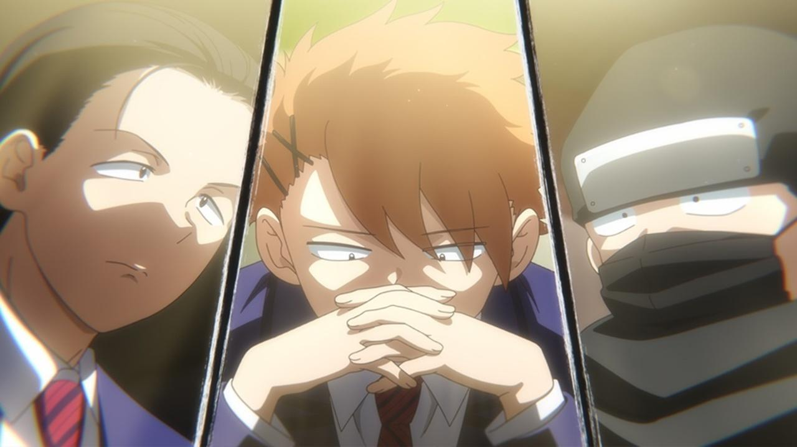
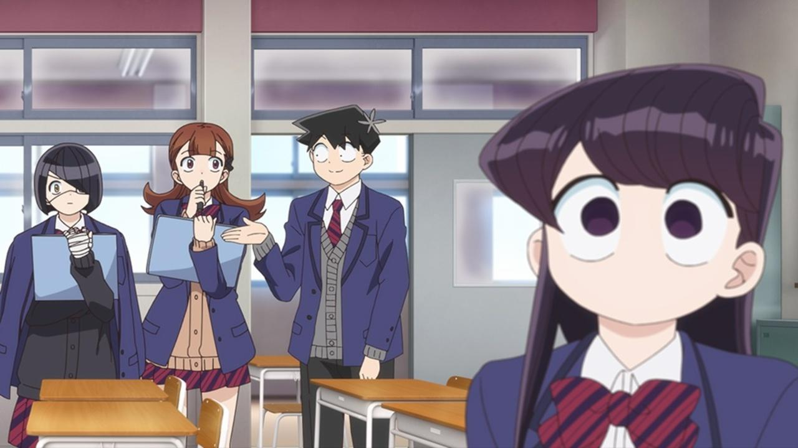
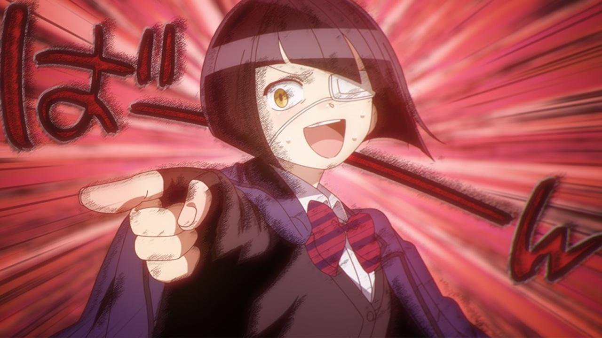
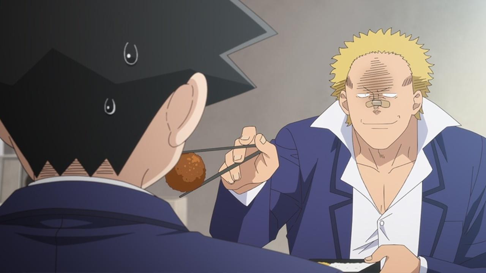
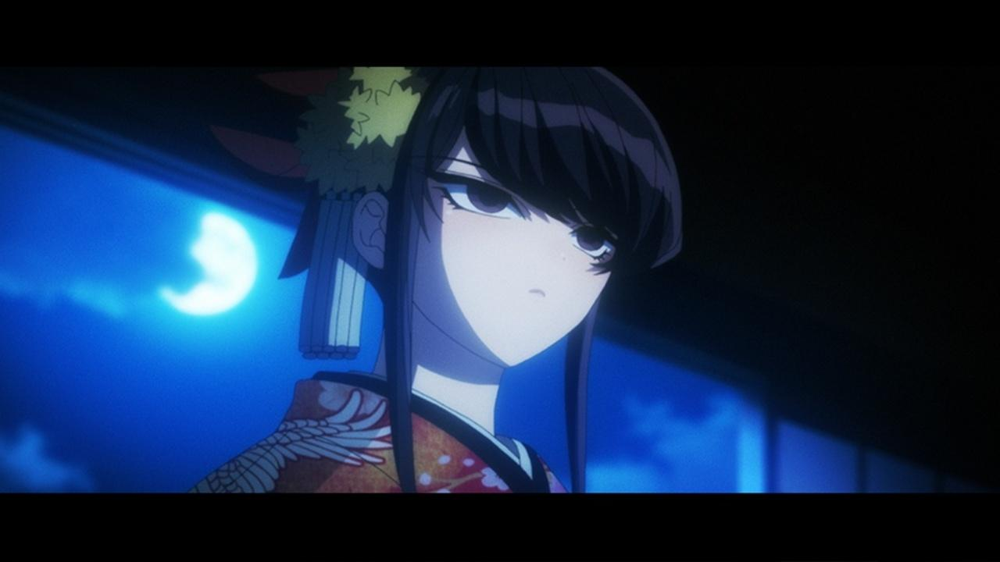

Reseña | Komi-san Can’t Communicate 2 – Capítulo 3
Nakanaka se acerca a Tadano para que le ayude a comprender mejor a Komi, ahora que son amigas, a quienes se les une Yamai. Tadano les pide que mencionen qué creen que está sintiendo Komi en distintas situaciones, a lo que terminan compitiendo. Al final del día, Komi se había percatado que la observaban, y quería unirse a ellos en lo que hacían, por lo que Tadano logra crear una reunión entre los cuatro para tomar algo y que Komi pase más tiempo con ellas y viceversa.
La segunda sesión de los chicos para relatar sus ilusiones sobre con qué chica de la clase saldría inicia. Iniciando con Onemine y el sentimiento de relajación que emite, luego hablan sobre Otori y su amabilidad y cariño, y por último presentan un escenario de drama histórico para Komi. Hasta que la misma Komi llega al salón y la sesión se cierra, retirándose para que sus ilusiones no sean expuestas a los demás.
Katai está nervioso por invitar a Tadano para almorzar juntos. Luego de darse valor y hablarle, no puede terminar y termina retirándose del salón. Tadano, al ver que cargaba su caja de almuerzo, entendió al situación y lo siguió para almorzar juntos. Komi también los sigue ya que estaba preocupada por Tadano, pero termina uniéndose a ellos para almorzar.
Komi escucha la camioneta de yakimo (papas dulces tradicionales en Japón), por lo que su padre le da dinero para que compre unos. Siguiéndolo en una clase de juego de “luz roja o luz verde“, hasta logras su objetivo, comprando cinco yakimo. En su camino de vuelta a su casa, Komi se encuentra con Tadano, quien había salido a tomar aire luego de escribir una nueva página en su oscuro pasado. Komi le regala un yakimo a Tadano, y este la invita a salir a divertirse juntos durante las vacaciones de invierno.
A lo largo del anime, Tadano ha demostrado que no es un simple personaje más, logrando comprender rápidamente lo que piensa Komi poco tiempo de convertirse en su amigo, además de una gran habilidad para leer el ambiente y “la mente” de los demás. Algo que se desenlazará en uno de los momentos que más me quedaron grabados del manga, pero que aún falta bastante, por lo que seguramente no sea adaptado en Komi-san Can’t Communicate 2.
En cualquier caso, puedo entender el razonamiento de Nakanaka para ir con Tadano en busca de ayuda para acercarse a Komi. Personalmente hubiera hecho lo mismo. Aunque ir directamente a Komi sería una opción, la conversación no creo que fluya apropiadamente sin la ayuda de un experto y alguien que pueda darle cierto sentimiento de tranquilidad a la misma Komi. Por cierto, para mi fue agradable ver la competencia entre Nakanaka y Yamai, principalmente porque del odio al amor hay un solo paso, y ellas dos ya tiene un tiempo que muestran indicios de volverse cercanas en el futuro (no románticamente).
Tadano también fue capaz de asimilar la situación con Katai, desde el reconocer que se acercó para pedirle almorzar juntos, hasta el ver que estaba tenso/nervioso por intentar hablar con él como un amigo.
De cierta manera, siento que Tadano tiene mejor habilidad para comunicarse con los demás que Najimi. Pues Najimi me parece casi siempre entra “invadiendo” las conversaciones. Además, prefiero el cliché de pensar en que alguien lee mis pensamientos, volviéndose tan obvio que la otra persona realmente sabe que estoy pensando eso. Y, por supuesto, el efecto es mayor cuando ambos se entiendo, como en este caso debido al “oscuro pasado” de Tadano le es sencillo entender a Nakanaka aunque utilice palabras complicadas o frases un tanto incongruentes.
Tadano, a lo largo de ambas temporadas de “Komi-san Can’t Communicate” se ha convertido en uno de mis protagonistas masculinos preferidos. Aunque sigue estando por detrás de Sakuta. Por su parte, Nakanaka cada vez me gusta más su personaje, con sus expresiones y su personalidad, ha tenido más de un momento “fulminante”. Quedando en mi lista personal solo por debajo de la protagonista, y por muy poca diferencia.
La palabra ‘invitación’ la considero mucho más fácil decirla que hacerla. Ya sea por timidez, vergüenza, miedo o nerviosismo, muchas veces la palabra no sale y termina en arrepentimiento. Sin embargo, hay momentos en los que es tan natural hacerlo que es inevitable. Como en este caso en Komi-san Can’t Communicate 2 – Capítulo 3 con la invitación de Tadano a Komi para divertirse en las vacaciones de invierno. Dudando sobre si invitarla o no, y presentándose esa oportunidad, la palabra gracias hasta se me hubiera olvidado.
Eso sí, no voy a negar que todo ese encuentro parecía cosa del destino, juntándolos y creando un ambiente tan perfecto para ellos. Los indicios para un avance en su relación son más que obvios. Sin embargo, aún son bastante alejados del objetivo final. Por el momento, ambos siguen haciéndose más cercanos, y sin darse cuenta poco a poco están tomando una bifurcación en el camino de la amistad.
Ahora bien, hablando sobre la invitación para almorzar juntos, creo que es un primer paso bastante importante en este caso. Considerando la personalidad de Katai más su aspecto físico, los malentendidos no podían faltar. Personalmente no tengo una situación similar para comparar el esfuerzo que tuvo que hacer Katai para invitar a Tadano, y aún más siendo observado por su maestra. Pero definitivamente pude sentir el nerviosismo de Katai a través de la escena.
Siendo la callada, tímida y un tanto misteriosa protagonista, no pude evitar unirme al lado de Nakanaka y Yamai para intentar descifrar los pensamientos de Komi. La primera me pareció sencilla, con Komi queriendo ayudar pero los demás lo impedían por el estatus de diosa que le impusieron anteriormente. Eso sí, me pareció bastante gracioso el como Makeru tomó el balón y se fue sin decir nada. Fue una situación que, estando en los zapatos de Komi sería confusa, pero en los de un observador, como Tadano, me pareció bastante cómica. Incluso aunque pueda entender el motivo detrás del comportamiento de Makeru, por su personalidad. Ese momento, no importa cuántas veces lo vea, me sigue haciendo reír.
En la segunda yo hubiera apostado por que Komi estaba pensando cómo podría adentrarse a una conversación así. La tercera sobre el arcoíris, creo que también era evidente el que Komi quería ver el arcoíris pero no podía por la cantidad de personas. En la clase de ‘Economía del hogar‘, mi respuesta hubiera sido cualquiera de las dos de Nakanaka o Yamai, no me esperaría que aún siguiera pensando en el arcoíris.
No obstante, después de toda esta escena de la competencia, considero que el personaje de Komi volvió a demostrar el desarrollo que ha logrado a lo largo del anime, siendo ella quien se acerca a Tadano y compañía para preguntarles sobre lo que están haciendo e intentar unírseles. Algo que creo Tadano entendió rápidamente y la apoyó debido a que fue ella quien dio el primer paso, esta vez sin el consejo de él para que lo hiciera, como en el capítulo anterior con la visita al ‘café de gatos‘.
Pero, pudimos ver un poco más de su personalidad, y creo que no es una mala persona. Sí, no tiene escrúpulos y parece disfrutar matar a todos, pero no es a eso a lo que me refiero. Como pudimos observar en sus interacciones con los demás, ha cumplido con su parte del trato, pero jamás deja pasar la oportunidad para hacer o decir algo que incomode a los demás. ¿Por qué?
Por último, la ilusión de Komi. En lo personal, no importa cuánto lo intente, no logro imaginar una situación similar a sus ilusiones con Komi-san. Aunque definitivamente no sería en un drama histórico. Lo poco que me imaginaría de la situación sería en una casa con un toque más tradicional, con el típico sonido del bambú chocando contra una piedra luego de vaciarse de agua, y un ambiente bastante tranquilo con algunos pájaros de fondo. De hecho, creo que como me la imaginaría sería en una entrevista matrimonial en la que ambos están tan nerviosos que no avanza para nada.